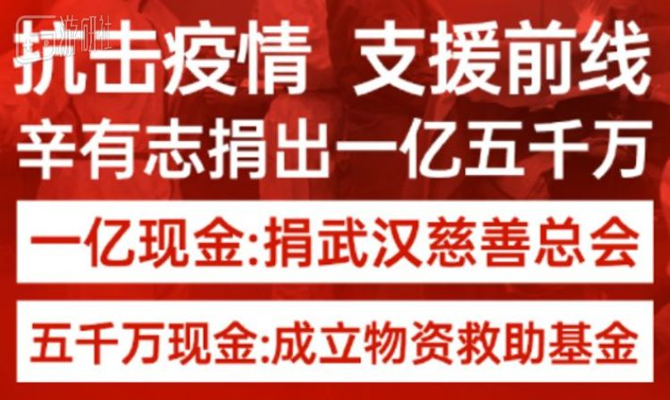
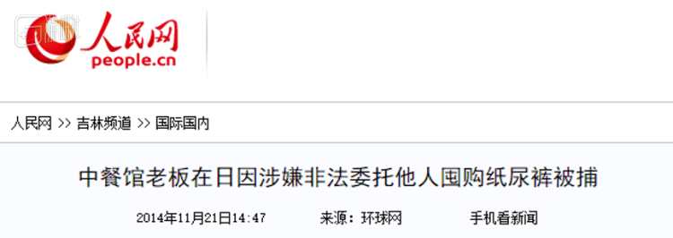
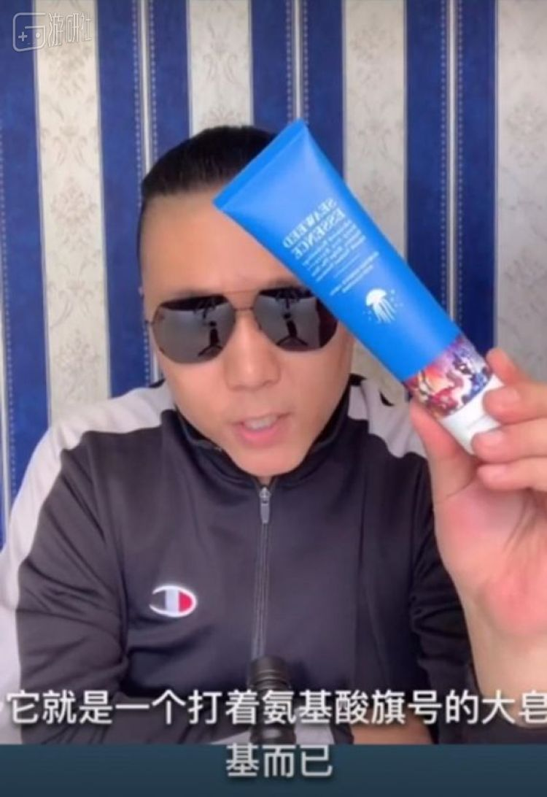

特别报道 | 疫情之下，在线教育能否“逆行而上”？
原文链接 备份链接 一场疫情改变了教培行业的局面，这既是在线教育相关公司承担社会责任的时期，也是证明其价值的机会。 记者 | 王一越、邓舒夏、叶雨晨、吴洋洋 实习记者 | 陶紫东、袁颖 编辑 | 倪 妮 制图 | 程 星 寒暑假历来是教 …
直播带货真假难辨，但捐出去的那1.5亿确实是真金白银。
最近这段时间，国内爆发的新型肺炎疫情牵动着很多人的心，不管从新闻公开的报道，还是相关部门公布的疫情情况，都能够很直观的感受到武汉的医用物资十分紧张。有不少企业带头捐款、捐物，一些明星通过自己成立的基金会筹集着善款，能力有限的普通人也通过各种渠道献出一份心意。
捐款相关的新闻一度占满了各个平台的热搜，评论里掺杂了很多情绪，这其中有因善款未能合理分配而产生的愤怒，也有为每个淳朴善良的瞬间而发自内心的感动。
在众多捐款消息中，“辛有志捐出一亿五千万”足够吸引眼球，毕竟国内不少一线互联网公司都没能捐到这个数字，而更令人感到好奇的是，辛有志是谁？

1
辛有志在快手有3000多万粉丝，去年淘宝官方公布的“电商达人年度卖货榜单”中显示，他在所有主播中排名第一。虽然与在淘宝直播的李佳琦同属于顶级流量的带货主播，但在快手平台之外，他的影响力并不如李佳琦。
从微博的粉丝量可以直观的看出这种差距，李佳琦在微博有1000多万粉丝，而辛有志仅有74万，刚好是李佳琦的零头。这也是为什么，当“辛有志捐出一亿五千万”的消息出现在热搜时，很多网友对这个名字感到陌生。
其实辛有志在过去的2019年里没少露过面，从一些热搜中都能找到他的身影。只不过他在微博上并没有李佳琦那样的辨识度，媒体在发布相关消息时，大多将辛有志的姓名省略，用“网红”代替。
比如去年8月18日，辛有志在北京奥体中心请来42位明星办了一场婚礼，胡海泉当司仪、张柏芝送礼物、成龙压轴出场，声势很浩大，当时还上了微博热搜，但话题是“网红结婚花5千万请42位明星”。
如果你对这个婚礼没有印象的话，可能还看过一段成龙被伴舞意外飞踹的短视频，这个小插曲就是发生在辛有志的婚礼上。
在更早前，郭富城的一组大眼睛、尖下巴的美颜直播照上了热搜，几乎没人留意到坐在一旁帮忙推销商品的主播，而那个主播正是辛有志。
辛有志的经历和气质与快手这片土壤相处的十分融洽。他在3000万粉丝的大号简介中称自己是“农民的儿子”“百姓主播”，他的励志、鸡汤故事被粉丝们传颂，但电商主播和微商色彩的身份也让不少人在网上声讨“还我血汗钱”。
2
辛有志在直播间和媒体前，不止一次讲过他的成长故事。
成龙与辛有志
他出生于黑龙江通河，小时候家里很穷，父亲靠着借来的一千块钱才结了婚，一家人住在一间仓库中，晚上躺在床上时，可以透过仓库顶上的漏洞看星星。
辛有志在新浪娱乐的采访中提到自己因成绩差，早早辍了学。白天跟着父亲上山采野菜，晚上拉网捕鱼，家里的经济条件逐渐好了起来，盖起了房子，顺带在村中开了个小商店。
十五岁那年，他靠自己赚的钱买了一台摩托罗拉手机，看到同村长大的好友从外地打工回来，也想着去村外看看，跟父亲说他要去哈尔滨打工，“想要在二十岁的时候能开一台电视广告中看到的现代伊兰特”。
事实证明他并不适合给别人打工。他在哈尔滨找了一家海鲜店打工，那是他第一次接触海鲜，也是从那时起才发现自己海鲜过敏，吃了一顿工作餐后上吐下泻，草草结束了第一份工作。
再之后他去了山东济南学挖掘机，半年时间花费了两万多，他却回来跟父亲说每天十个小时坐不住，回到家中重新干起了老本行。好在家中的小商店越做越好，山野菜也畅销，每年的效益还不错。
待在家里久了，辛有志还是闲不住，拿着家人给的三万块钱去通河县城做起了小生意。从商场门口摆地摊做起，他越做越大，买了一辆面包车，开了一家名为“辛式果业”的水果超市。
成功人士的经历也大多俗套，一帆风顺的过程中总要经历些坎坷。在县城中他结识了一些新朋友，白天玩台球，晚上去酒吧，水果店的生意逐渐荒废下来。等到惊醒过来时，开水果店的银行贷款以及滞销损失的水果，让他欠下了六十多万。
他听说出国打工两年就能赚二十万，为了还债，拿了家里最后的7万块，办了留学签证，坐着飞机去了日本。
冲着赚钱还债的辛有志在日本发现了商机。当时中国留学生喜欢倒卖日本当地的花王纸尿裤，通过卖给中间商，从而换取每包五块钱左右的利润。辛有志从早上到深夜，到处寻找售卖花王纸尿裤的商店，一天的收入能有3000块，他打电话给父亲：“60万的债，很快能还上。”
辛有志逐渐在日本站稳了脚跟，最初寻货时骑的自行车，更换成了一辆汽车，甚至专门租赁仓库存放货物，直接卖给国内的经销商。
辛有志的生意越做越大，他开始召集朋友和当地的留学生，但仓库最终被日本警方查封，理由是他非法雇佣留学生。
在日本有了案底的辛有志回了国，他的手里依旧掌握着进货渠道和客户，在国内开公司做淘宝店。与此同时，快手也成了国内各个县城中的热门应用，虽然当时快手以及其他短视频平台都尚未开通直播卖货的商务功能，但他从那时起就想到了“如果有一天拥有了足够多的粉丝，就可以直接去跟用户接触。”
他给头部主播送礼物，在快手的直播间中刷满了存在感，不少观众开始关注他。他以讲故事的形式分享这些年的创业心得，时不时送出自己淘宝店中的产品，日积月累，产生了一批黏性很强的观众。
直到各个平台都打通了直播卖货的功能后，辛有志与那些响当当的网红主播一样，单场直播的销售额以千万甚至亿来计算，在那场用重金砸出来的婚礼结束后，他开起了直播，当晚的销售额有1.3亿元。
3
站在风口的辛有志把握着时代的机遇，收割着财富的这些年，不断打着规则的擦边球，这也是有人厌恶辛有志的原因之一。
辛有志在日本艰辛的创业经历确实很精彩，但归根结底是游走在违法的边缘。2014年，日本共同社报道了一起案件：
日本兵库县警方外事课19日以违反《出入境管理及难民认定法》的嫌疑逮捕了该县明石市大久保町的台湾餐馆中国籍老板辛有志。他涉嫌委托他人大量购买纸尿裤并支付报酬，助长了“非法”劳动。
日本警方在调查时没收了账簿，发现辛有志一年时间里卖出了总计1.4亿日元（当时约合人民币725万元）的纸尿裤。

尽管如此，辛有志还是在日本获得了第一桶金，他回国后借助短视频平台、电商直播的兴起，做起了自己的产品“辛有志严选”。自产自销给他带了丰厚的利润，但产品的质量也成了人们关注的焦点。快手上有位主播专门做了一期视频，质疑他的洗面奶，只是打着氨基酸旗号的大皂基。

带货主播推销的产品质量一直不让人放心，此前李佳琦在直播中推荐了一款不粘锅，在演示煎鸡蛋的环节时，鸡蛋却粘在了锅底，被网友称作是“直播翻车”。一些网友对辛有志直播时推荐的产品也有同样担忧，觉得他自称“国外售价2000的产品，国内只卖200”，是在侮辱观众的智商。
除了对主播身份的不信任，辛有志还沾上了“微商头子”的称号。辛有志曾澄清过自己跟微商没关系，也没有研究过微商。实际上他如今的销售方式确实与层层分级、类似传销模式的微商没多大关系，但北京奥体中心婚礼上的新娘、辛有志的妻子初瑞雪，却是一个如假包换的微商头子。
初瑞雪也是个快手红人，有2000多万的粉丝，在她的快手主页背景墙上，有很多她与明星的合照。这是当年微商惯用的手法，甚至于奥巴马都曾下岗再就业，在中国以25万元一次的价格与微商们握手合影。
初瑞雪擅长使用微商惯用的奖励形式，大张旗鼓的邀请代理参加会议，用23辆朗逸、22辆宝马和8辆玛莎拉蒂豪车作为奖品。不少代理到处宣传自己喜提豪车的消息，引来了广州市工商局调查，结果发现只有21辆朗逸、3辆宝马、1辆玛莎拉蒂是“交付使用权”，其余的车只是充场面。
4
辛有志一方面有着数以千万的忠实粉丝，另一方面又带着电商主播和微商关联的原罪，这使得他一直有不小的争议。这种争议放到了如今这次1亿现金、5千万物资的慈善事件上，便使得他又多了个诈捐的嫌疑。
在武汉市慈善总会不断公布捐款数额期间，这种争议被逐渐放大。
1月26日，武汉慈善总会发布了《市慈善总会关于新型肺炎防控捐赠款物公告第1期》，其中辛有志以公司的名义捐出了1000万元，有网友认为辛有志在玩文字游戏，1亿现金如今变成了1000万。
随着公告的不断更新，直到1月28日第3期公告的公布，辛有志累计捐赠了5000万现金，但1月29日发布的第4期名单上，辛有志的公司并未出现。
不少网友质问他“1.5亿何时到账”，嘲讽其“为了热度欺骗国家，不要脸”。而辛有志严选的相关负责人则对外称，之所以现金没有到账，是因为银行转账限制。就像辛有志公司所言，在武汉慈善总会随后公布的第5期和第6期捐赠公告中，辛有志先后又捐赠了4000万和1000万，加上之前的5000万，共计1亿元，兑现了此前的承诺。
同时，那五千万的物资也通过微博视频的形式进行公示，辛有志工作室通过官方微博对外宣称“十万只口罩由江苏仓库发往武汉”。
原本被黑粉占领的微博评论，一时间又挤满了辛有志的死忠粉。
5
去年，辛有志举办了那场昂贵的婚礼后，有媒体问他举办这场演唱会形式的婚礼是否别有所图。他的回答很干脆：“当然有所图，我的所图就是让自己的粉丝认可我，让我自己的用户在我的渠道里，对我跟别人是不一样的认知。大家说演唱会后卖了1.3亿，但我每场直播都这样，我不需要靠做活动去做这个东西，只是希望做了活动后能让更多的品牌注意到这件事，跟我有更多合作。”
他甚至还毫不犹豫的承认这场声势浩大的婚礼，本质是一次公关行为。
辛有志是个复杂的存在，围绕他的是与非或许要归结于他是个精明的商人。逐利是他的本性，他的商品可能有好有坏，有真有假，他的捐款除了善心之外也可能别有所图，但这一切的争议并不足以忽视他花出去的那1.5亿是真金白银。
*本文由游研社与公众号“网上冲浪记事”联合出品
原文链接 备份链接 一场疫情改变了教培行业的局面，这既是在线教育相关公司承担社会责任的时期，也是证明其价值的机会。 记者 | 王一越、邓舒夏、叶雨晨、吴洋洋 实习记者 | 陶紫东、袁颖 编辑 | 倪 妮 制图 | 程 星 寒暑假历来是教 …
原文链接 备份链接 王源粉丝联合应援博公布的财务明细里，最小的一笔收入是0.12元。金泰亨吧公布了物资到达每一家医院的时间，最晚一批于1月26日19点11分送达武汉大学人民医院。 在武汉疫情的支援行动中，饭圈成为一股透明、高效的民间力量， …
原文链接 备份链接 以下文章来源于地球青年图鉴 ，作者地青 在湖北疫区物资援助中，一群饭圈女孩动作迅速地为医护人员筹集了不少物资，她们的效率与组织能力令人惊叹。 我们采访了三位参与湖北疫区物资支援的饭圈女孩，从这些95后、00后粉丝身上 …
原文链接 备份链接 目前，几个粉丝站的物资除了少量还在路上，大部分已经送到需要的人手里，然而尽管如此，全国各地的物资缺口仍然很大。 文 | 王超 高逸佳 薛雨霏 编辑 | 沈小山 “这些天大家也真的很拼了，晚上核对整理信息有时三四点才睡， …
原文链接 备份链接 妈妈总说我出嫁了他们一生的任务才算完成 口述/小梦（上海读研，定居上海） 我老家在湖北一个小县城。 9天前，亲友群里发来消息：武汉封城，小梦从上海回不来了，初六的婚不结了。 虽然年纪和小梦相差不大，但按辈分来说，她算是 …